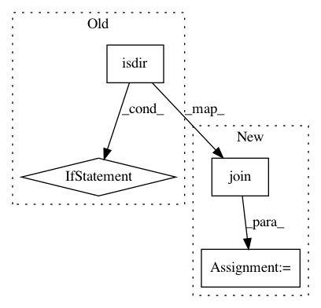

674506c409d5c1a71c9ee2a974fa94a2b94b6e84,official/nlp/modeling/layers/tn_expand_condense_test.py,TNLayerTest,test_model_save,#TNLayerTest#Any#Any#,159
Before Change
loaded_model = tf.keras.models.load_model(save_path)
// Clean up SavedModel folder
if os.path.isdir(save_path):
shutil.rmtree(save_path)
// Clean up h5 file
if os.path.exists(save_path):
os.remove(save_path)
// Compare model predictions and loaded_model predictions
After Change
// Train the model for 5 epochs
model.fit(data, self.labels, epochs=5, batch_size=32)
save_path = os.path.join(self.get_temp_dir(), "test_model")
model.save(save_path)
loaded_model = tf.keras.models.load_model(save_path)
// Compare model predictions and loaded_model predictions
In pattern: SUPERPATTERN
Frequency: 4
Non-data size: 4
Instances
Project Name: tensorflow/models
Commit Name: 674506c409d5c1a71c9ee2a974fa94a2b94b6e84
Time: 2020-09-18
Author: hongkuny@google.com
File Name: official/nlp/modeling/layers/tn_expand_condense_test.py
Class Name: TNLayerTest
Method Name: test_model_save
Project Name: rtavenar/tslearn
Commit Name: 7eda0ba9f842e7b125f397182abd513d5d22b17d
Time: 2018-04-21
Author: romain.tavenard@univ-rennes2.fr
File Name: tslearn/datasets.py
Class Name: UCR_UEA_datasets
Method Name: load_dataset
Project Name: dmlc/gluon-nlp
Commit Name: 29c957249fbdd4d5f7f517772835b7dc31a85e94
Time: 2020-01-15
Author: linhaibin.eric@gmail.com
File Name: src/gluonnlp/data/utils.py
Class Name:
Method Name: _load_pretrained_vocab
Project Name: fritzlabs/fritz-models
Commit Name: 91bb9f05e95d0902f5fcd9c4ef8dee5f193c8bf7
Time: 2018-08-04
Author: jamesontoole@gmail.com
File Name: create_training_dataset.py
Class Name:
Method Name: